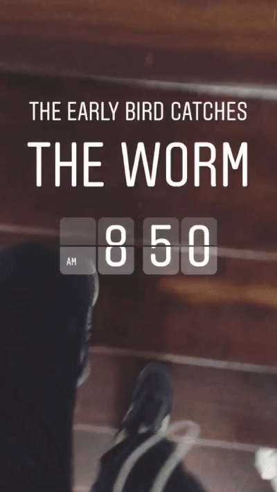
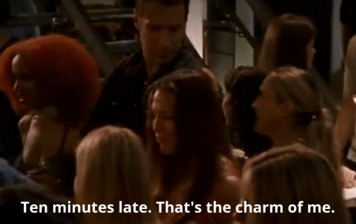
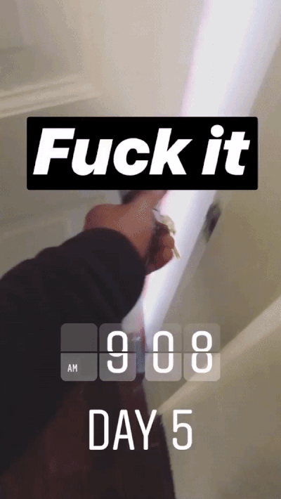
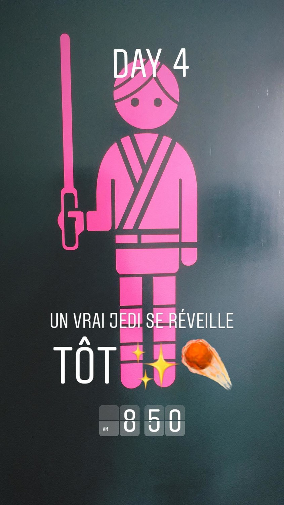

Blog
Millennials & Instagram
A few months ago, my boss asked me to talk about my performance at work. Generally speaking, everything was fine, but there was something she was concerned about: my thirty minutes late daily routine.
I work in a digital agency in Mexico and, like most of the agencies, the schedules are a little bit blurry. We have not employee time clocks or attendance list in which we have to sign in every single time we arrive or go home. We have freedom... inside a 8-hour work day.
I took her comment in mind, but still I was having some difficulty to get on time. Second occasion my boss asked me to arrive on time at work she wasn't that nice. And of course I didn't take it in the right way 'cause... I'm a millennial.
Maybe... too millennial.
I was pretty mad but I really was trying to hit the clock and it seems it just wasn't enough. So, I decided to start, which what I called my own «21 day CHALLENGE». Because that's what Millennials do when we want to commit. We do challenges. Ok, you've got it but, what about the 21 days? Well, accordingly with pop science it is what it takes to build an habit —even though we know now that it could take longer or less, depending on the kind of habit you're trying to build.
The next day I wasn't just on time at office. I was early at. And of course I documented it on Instagram because #millennial
I'm not gonna lie, at first I thought to quit and keep with «my charm» but I'm not a quitter. When I'm faced with some sort of problem I like to overcome it. I'm pretty skeptical, but I do believe that's the way we improve, by overcoming obstacles.
Honestly, it wasn't that hard. Aside from waking up 30 minutes earlier it was really pleasant not to worry about the «I'm late again» constant thoughts and to travel withou the vibe of everybody's rushing to office —'cause guess what? I'm not a loner when it comes to arrive late at work in Mexico.
Almost 60% of people in Mexico arrive late on a daily basis —not just work, but personal appointments, as well— and the main reasons are lack of responsibility, too much traffic, and misunderstandings. Seems like I was being just like anyone else, a latecomer. Someone unable to commit, someone who wasn't accountable.
I would like to blame the blurry border times at work but it wouldn't be fair.
I couldn't help but wonder, where does this problem come from in my case? For all I know, I started developing this obnoxious habit early in college. Surprisingly, there were not a single teacher who doesn't let me come into classrooms for my unpuctuality —the truth must be said: I was a great student, and teachers knew it.
So, getting rid of a 4 year habit would be something to brag about —and here I am. For the next 21 one days, I was able to arrive on time —some days just a few minutes behind the clock, but that's ok, I guess, nobody's perfect. Believe it or not, the fact that I was documenting on Instagram every single day helps me out to reach my goal—peer pressure, I guess— but we'll need more studies on Instagram as a tool for commitment to draw some conlcusions.

I know arriving on time it's just an habit for some people, but for me is a milestone. Being able to commit and —as hard as it is to write— respect other people's time it's been a great accomplish for me and a lesson that should have learnt earlier.
No more «Sorry, I'm late again». No more «I would be there in 10 minutes». No more of a latecomer. From now on, I'll really be there. I'm not sure what my professional future would be like, but for all I know, I keep trying to become more of anyone else.